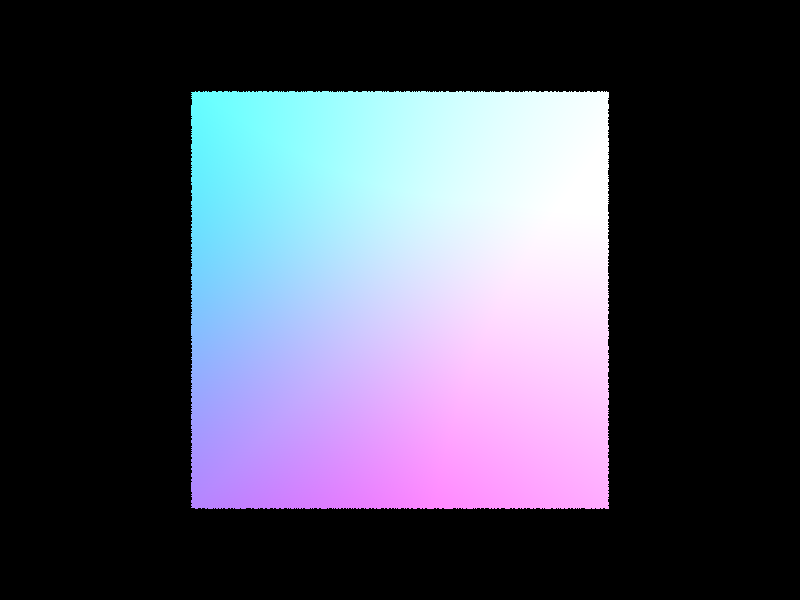
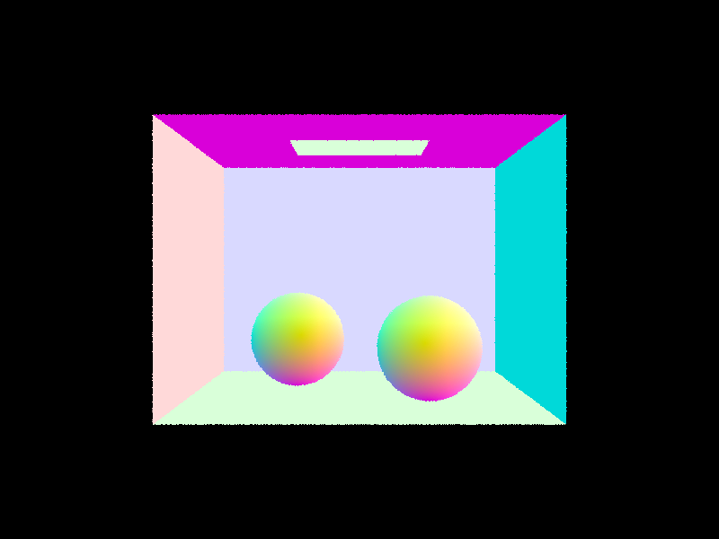
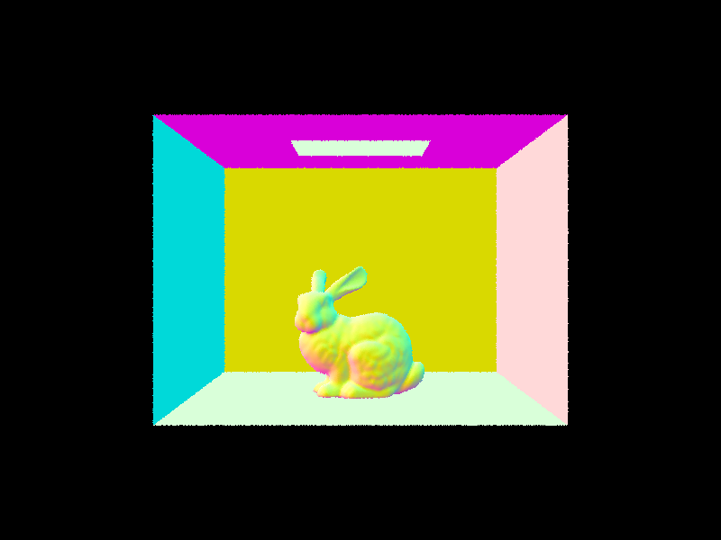
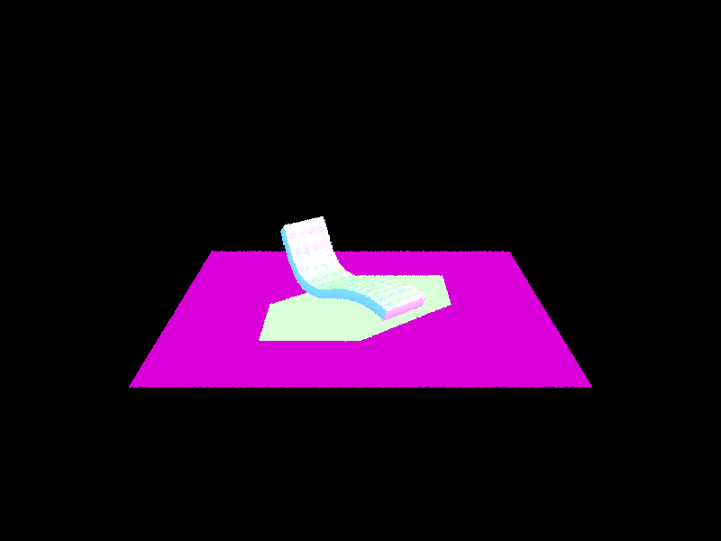
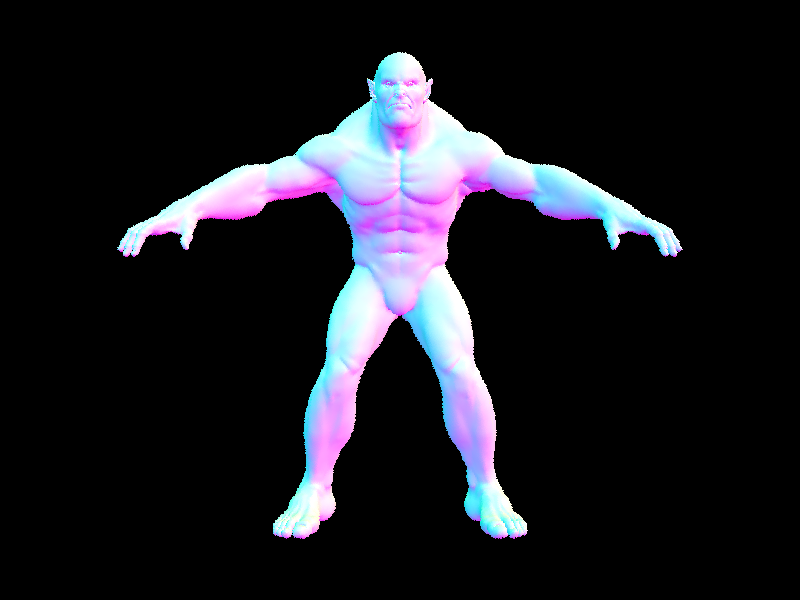
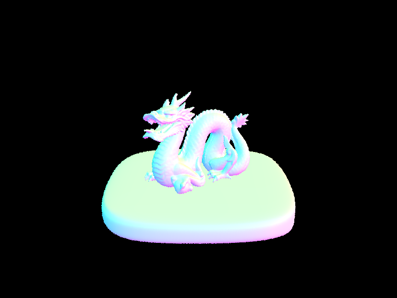
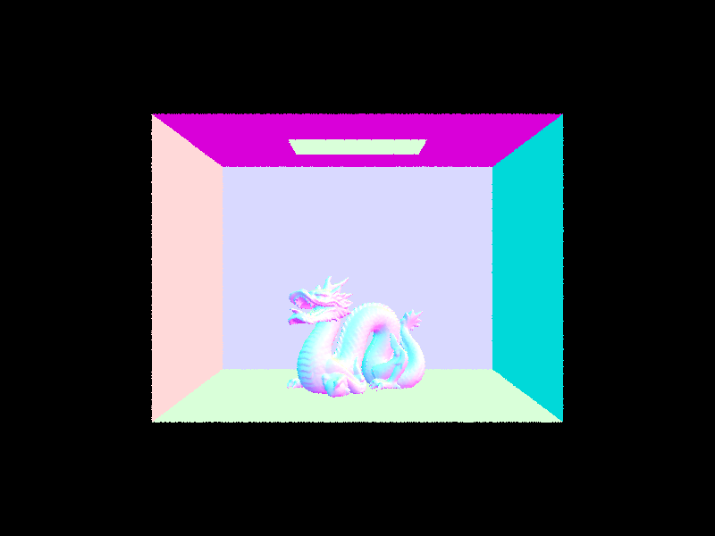
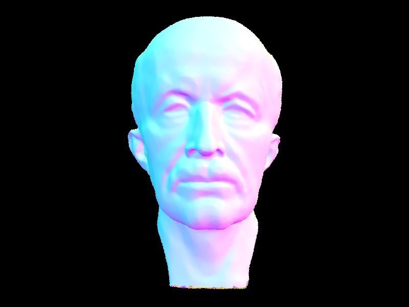

CS184/284A Spring 2025 Homework 3 Write-Up
Link to webpage: cal-cs184-student.github.io/cs284a-hw-webpages-jasper/
Link to GitHub repository: github.com/cal-cs184-student/cs284a-hw-webpages-jasper

Overview
Give a high-level overview of what you implemented in this homework. Think about what you've built as a whole. Share your thoughts on what interesting things you've learned from completing the homework.Part 1: Ray Generation and Scene Intersection
In this part, I implemented camera ray generation and primitive intersection testing, which are fundamental components for rendering 3D scenes.
Ray Generation
I implemented the Camera::generate_ray() function to convert 2D image coordinates to 3D rays. The process involves:
- Converting normalized coordinates to points on the camera's sensor plane
- Creating a ray from the camera through this point
- Transforming the ray to world space using the camera-to-world matrix
The resulting rays correctly sample the scene according to the camera's position, orientation, and field of view.
Triangle Intersection
For triangle intersection, I implemented the Möller-Trumbore algorithm which efficiently computes both the intersection point and barycentric coordinates. The algorithm:
- Computes vectors for two edges of the triangle
- Uses cross products to solve for the intersection parameters
- Validates the barycentric coordinates to ensure the point is inside the triangle
- Checks if the intersection distance is within the ray's valid range
For valid intersections, I calculate the normal by interpolating the triangle's vertex normals using barycentric coordinates.
Sphere Intersection
For sphere intersection, I solved the quadratic equation that determines where a ray intersects a sphere. The implementation:
- Forms a quadratic equation based on the ray and sphere parameters
- Solves for the intersection distances
- Chooses the closest valid intersection
- Computes the normal at the intersection point
Results with Normal Shading
Below are renders showing normal shading for various scenes. The colors represent surface normals, providing a clear visualization of the geometry.
|

|

|
|

|

|
Part 2: Bounding Volume Hierarchy
In this part, I implemented a Bounding Volume Hierarchy (BVH) to accelerate ray intersection tests, dramatically improving rendering performance for complex scenes.
BVH Construction
My BVH construction algorithm recursively divides the scene primitives into subgroups:
- For each node, I first compute a bounding box containing all primitives
- If the number of primitives is small enough, I create a leaf node
- Otherwise, I split primitives along the longest axis of the bounding box
- For the splitting point, I use the midpoint of the bounding box along the chosen axis
- Primitives are assigned to left or right children based on their centroid positions
This spatial partitioning approach ensures that rays can quickly eliminate large portions of the scene without testing individual primitives for intersection.
Bounding Box Intersection
I implemented an efficient ray-box intersection test that:
- Computes the intersection points of the ray with each of the three pairs of axis-aligned planes
- Finds the latest entry point and earliest exit point across all three dimensions
- Returns true if the entry occurs before the exit and within the ray's valid range
BVH Traversal
My BVH traversal algorithm recursively tests rays against nodes:
- First checks if the ray intersects the node's bounding box
- For interior nodes, recursively tests both children if the box is hit
- For leaf nodes, tests all contained primitives for intersection
- For
has_intersection(), returns immediately after finding any hit - For
intersect(), checks all relevant nodes to find the closest hit
The BVH acceleration structure dramatically improved rendering performance. This transforms the ray-primitive intersection time complexity from O(n) to approximately O(log n), making it feasible to render scenes with tens of thousands of triangles in under a second. The most significant improvements were seen in models with high triangle counts, where naive intersection testing becomes prohibitively expensive.
Complex Scenes
Below are renders of complex models that would be impractical to render without BVH acceleration:
|

|

|
|

|

|
Performance Results
| Scene | Without BVH | With BVH | Speedup |
|---|---|---|---|
| bench.dae | 570.09 seconds | 0.11 seconds | ~5181× |
| beast.dae | 890.56 seconds | 0.16 seconds | ~5566× |
| maxplanck.dae | 532.31 seconds | 0.223 seconds | ~2387× |
The BVH acceleration structure dramatically improved rendering performance, with speedups of 2387-5566× for complex models. This transforms the ray-primitive intersection time complexity from O(n) to approximately O(log n), making it feasible to render scenes with tens of thousands of primitives in under a second.